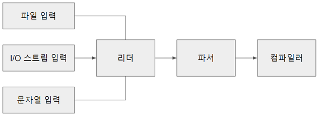

7. 컴파일러#

파이썬 코드를 파싱하면 연산자, 함수, 클래스, 이름 공간을 포함하는 AST가 생성
AST를 CPU 명령으로 바꾸는 것이 컴파일러
컴파일 과정#
 컴파일 과정을 그림으로 표현
컴파일 과정을 그림으로 표현
앞장에서 본 렉싱과 파서를 통하여 생성한 AST를 컴파일러를 통하여 CFG(Control Flow Graph)로 변환
어셈블러를 통하여 CFG의 노드를 순서대로 바이트 코드로 변환 후 실행
컴파일과 관련된 소스#
파일 |
목적 |
|---|---|
Python/compile.c |
컴파일러의 구현 |
Include/compile.h |
컴파일러 API와 타입 정의 |
PyAST_CompileObject() CPython 컴파일러의 주 진입점
 컴파일러 상태는 심벌 테이블을 담는 타입
컴파일러 상태는 심벌 테이블을 담는 타입
심벌 테이블은 변수 이름을 포함하고 추가로 하위 심벌 테이블을 포함할 수 있음
컴파일러 타입에는 컴파일러 유닛도 포함
각 컴파일러 유닛은 이름, 변수 이름, 상수, 셀(cell) 변수들을 포함
컴파일러 유닛은 기본 프레임 블록을 포함
기본 프레임 블록은 바이트코드 명령을 포함
컴파일러 인스턴스 생성#
컴파일러를 실행하기 앞서 전역 컴파일러 상태가 생성
compiler 타입은 컴파일러 플래그, 스택, PyArena 등 컴파일러를 위한 다양한 프로퍼티를 포함
컴파일러 상태는 심벌 테이블 등의 다른 구조체도 포함
struct compiler {
PyObject *c_filename;
struct symtable *c_st;
PyFutureFeatures *c_future; /* pointer to module's __future__ */
PyCompilerFlags *c_flags;
int c_optimize; /* optimization level */
int c_interactive; /* true if in interactive mode */
int c_nestlevel;
int c_do_not_emit_bytecode; /* The compiler won't emit any bytecode
if this value is different from zero.
This can be used to temporarily visit
nodes without emitting bytecode to
check only errors. */
PyObject *c_const_cache; /* Python dict holding all constants,
including names tuple */
struct compiler_unit *u; /* compiler state for current block */
PyObject *c_stack; /* Python list holding compiler_unit ptrs */
PyArena *c_arena; /* pointer to memory allocation arena */
};
PyAST_CompileObject()가 다음과 같이 컴파일러 상태 초기화
모듈에 문서화 문자열(__doc__)이 없다면 빈 문서화 문자열 생성
__annotations__ 프로퍼티도 동일 작업 수행
스택 트레이스 및 예외 처리에 필요한 파일 이름을 컴파일러 상태에 설정
인터프리터가 사용한 메모리 할당 아레나(arena)를 컴파일러의 메모리 할당 아레나로 설정 (메모리 할당자는 9장 메모리 관리 참고)
코드 컴파일 전 퓨처 플래그들을 설정
퓨처 플래그와 컴파일러 플래그#
컴파일러 기능 설정
환경 변수 명령줄 플래그를 담는 구성 상태
모듈 소스 코드의 __future__ 문
퓨처 플래그는 Python 2와 3 간 이식 지원을 위해 사용
컴파일러 플래그는 실행 환경에 의존적, 실행 방식을 변경 할 수 있음
예시로 -O 플래그는 디버그 용도의 assert 문을 비활성화 하는 최적화를 진행
PYTHONOPTIMIZE=1 환경 변수로도 활성화 가능
심벌 테이블#
코드 컴파일 전 PySymtable_BuildObject() API로 심벌 테이블 생성
전역, 지역 등 이름 공간 목록을 컴파일러에 제공
컴파일러는 심벌 테이블에서 얻은 이름 공간에서 스코프를 결정, 참조를 실행
struct symtable {
PyObject *st_filename; /* name of file being compiled,
decoded from the filesystem encoding */
struct _symtable_entry *st_cur; /* current symbol table entry */
struct _symtable_entry *st_top; /* symbol table entry for module */
PyObject *st_blocks; /* dict: map AST node addresses
* to symbol table entries */
PyObject *st_stack; /* list: stack of namespace info */
PyObject *st_global; /* borrowed ref to st_top->ste_symbols */
int st_nblocks; /* number of blocks used. kept for
consistency with the corresponding
compiler structure */
PyObject *st_private; /* name of current class or NULL */
PyFutureFeatures *st_future; /* module's future features that affect
the symbol table */
int recursion_depth; /* current recursion depth */
int recursion_limit; /* recursion limit */
};
컴파일러당 하나의 symtable 인스턴스만 사용, 공간 관리 중요
두 클래스가 동일한 이름의 메서드를 가지고 있을 경우 모듈에서 어떤 메서드를 호출할지 정해주는 것
하위 스코프의 변수를 상위 스코프에서 사용하지 못하게 하는 것
위 두 가지가 symtable의 역할
심벌 테이블 구현#
symtable.c 에서 찾을 수 있다
주 인터페이스는 PySymtable_BuildObject()
mod_ty 타입(Module, Interactive, Expression, FunctionType)에 따라 모듈 내의 문장을 순회
mod_ty 타입인 AST의 노드의 분기를 재귀적으로 탐색하며 symtable의 엔트리로 추가
struct symtable *
PySymtable_BuildObject(mod_ty mod, PyObject *filename, PyFutureFeatures *future)
{
struct symtable *st = symtable_new();
asdl_seq *seq;
int i;
PyThreadState *tstate;
int recursion_limit = Py_GetRecursionLimit();
int starting_recursion_depth;
...
st->st_top = st->st_cur;
switch (mod->kind) {
case Module_kind:
seq = mod->v.Module.body;
for (i = 0; i < asdl_seq_LEN(seq); i++)
if (!symtable_visit_stmt(st,
(stmt_ty)asdl_seq_GET(seq, i)))
goto error;
break;
case Expression_kind:
if (!symtable_visit_expr(st, mod->v.Expression.body))
goto error;
break;
case Interactive_kind:
seq = mod->v.Interactive.body;
for (i = 0; i < asdl_seq_LEN(seq); i++)
if (!symtable_visit_stmt(st,
(stmt_ty)asdl_seq_GET(seq, i)))
goto error;
break;
case FunctionType_kind:
PyErr_SetString(PyExc_RuntimeError,
"this compiler does not handle FunctionTypes");
goto error;
}
...
모듈의 각 문을 순회, symtable_visit_stmt() 를 호출
Parser → Python.asdl에서 정의한 모든문 타입에 대한 case를 가지고 있는 거대한 swich 문
각 문 타입마다 심벌을 처리하는 함수 존재
함수 정의문 타입을 처리하는 함수는 다음 처리를 위한 로직이 있다
현재 재귀 깊이가 제귀 제한을 넘지 않았는지 검사
함수가 함수 객체로 넘겨지거나 호출될 수 있도록 함수 이름 심벌 테이블에 추가
기본 인자 중 리터럴이 아닌 인자는 심벌 테이블에서 찾음
타입 힌트 처리
함수 데코레이터 처리
마지막으로 symtable_enter_block()이 함수 블록을 방문해 인자와 함수 본문 처리
이렇게 생성된 심벌 테이블은 컴파일러로 넘김
핵심 컴파일 과정#
PyAST_CompileObject()에 컴파일러 상태와 symtable, AST로 파싱된 모듈이 준비되면 컴파일 시작
컴파일러 상태, 심벌 테이블, AST를 제어 흐름 그래프로 변환
논리 오류나 코드 오류를 탐지, 실행 단계를 런타임 예외로부터 보호
어셈블리#
컴파일 단계가 끝나면 블록 리스트 완성
각 프레임 블록은 명령 리스트와 다음 블록을 가리키는 포인터를 가짐
기본 프레임 블록들에 깊이 우선 탐색(DFS)를 실행, 명령들을 단일한 바이트 코드 시퀀스로 병합